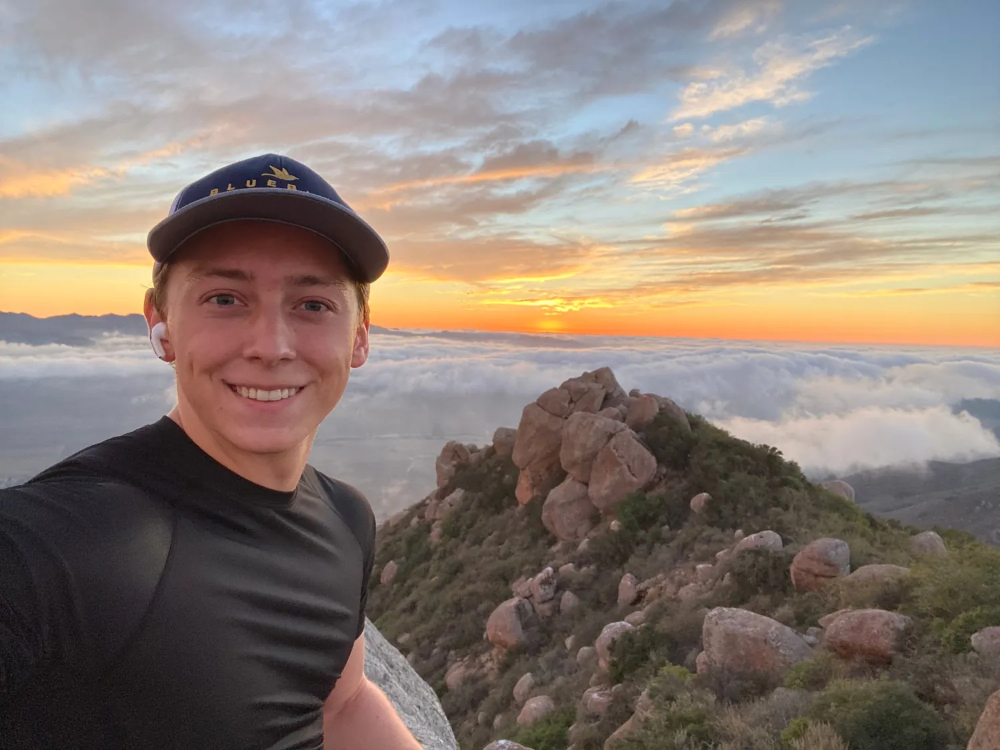
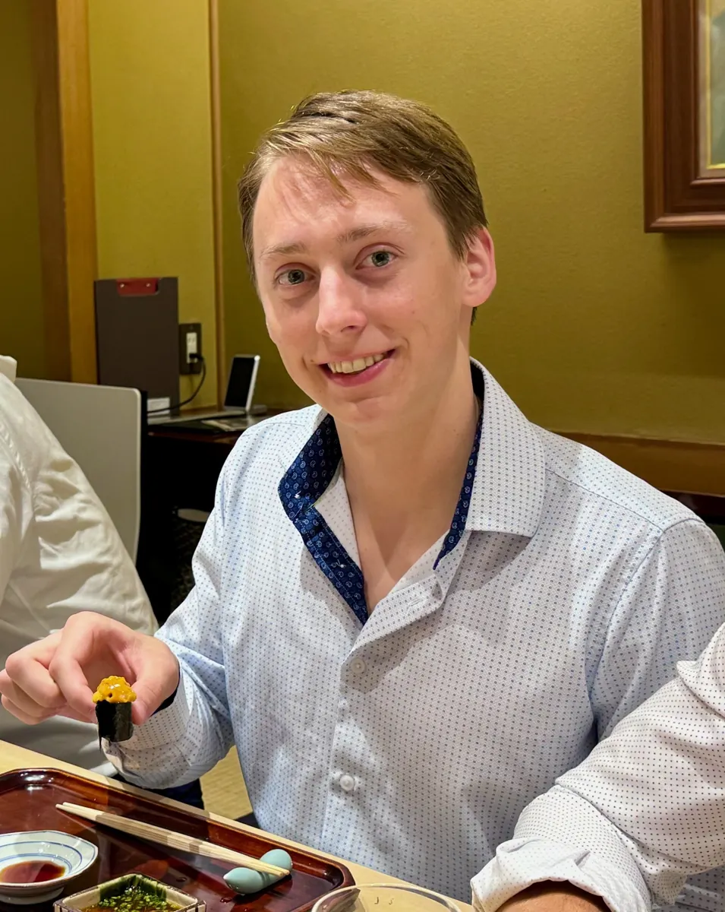
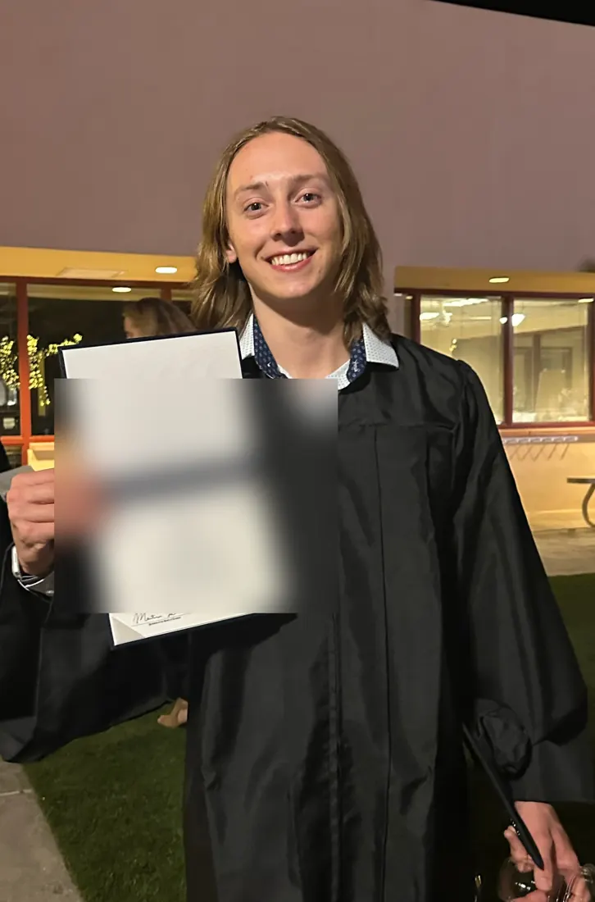

Engineering
Biomedical engineering at Cal Poly, heading for bioinstrumentation. Circuits, physics, cells, and the Medical Design Club.
The journey


I got here by taking things apart. First computers I bought broken and resold, then robot parts on a mill and lathe, and now compatibility layers, games and tools for my family's business.
Biomedical engineering at Cal Poly, heading for bioinstrumentation. Circuits, physics, cells, and the Medical Design Club.
The journeyCompatibility layers, a pixel-art game written without an engine, and tools for a real business.
The projectsThree seasons on a robotics manufacturing team, mill and lathe time, and one very good cutting board.
The workshopTaco Bell now, Dairy Queen before. Registers, rushes and real customers, next to a full engineering load.
On the clockCTO of a family real estate business, vendor booths at JLW Designs, and a computer resale hustle that grossed $6,000.
The CTO work



I like building things I can hold and things I can only run. A few frames from the parts of life that don't fit in a repo.
Where I'm headedSingapore this J-term through CIEE. Then, if it works out, a year in Japan.